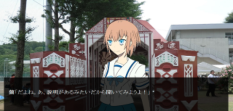

あなたはとある高校に通う男子高校生。ある日、あなたは同じ高校に通う幼馴染の女子高生と一緒に、高崎高校で開催されるという翠巒祭へ足を運ぶこととなる…
ビジュアルノベル型翠巒祭シミュレーションブラウザゲーム「すいらんっ！」誕生。
主人公が初めて訪れた翠巒祭。そこで待ち受ける出来事とは…？
ゲームを通して、あなたは翠巒祭の一部を疑似体験していくこととなります。
翠巒祭前に翠巒祭の雰囲気を知ってみたい方も、もうすでに訪れてくださった方も！
高高生自らが制作した、翠巒祭の魅力の詰まったゲームです！
ぜひ体験してみてください‼
↓スクリーンショット

ゲームは下記のリンクからどうぞ‼
翠巒祭シミュレーションブラウザゲーム「すいらんっ！」
http://2015-g.suiranfes.com/
※リンク先は音が流れます、音量にご注意ください。
※PC推奨
※別ウィンドウで開きます。
※Safariからプレイする場合は、プライベートブラウズをOFFにしてください。